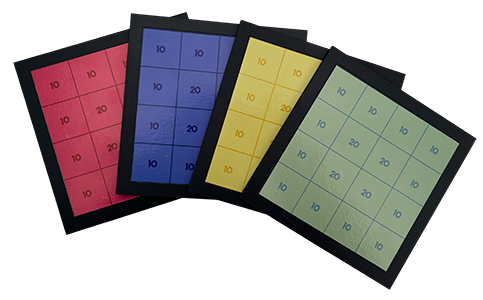

MANTENLO OCULTO, QUE NADIE SEPA


Cuadriculando es un juego de estrategia que consiste en sabotear a tus compañeros para ser el ganador. El objetivo del juego consiste en completar la cuadrícula oculta bajo el tablero. El primer jugador en completarlo gana la partida. Es un juego que requiere de concentración, estrategia y buenas decisiones al usar las cartas que cada jugador tiene guardadas.


Gira la ruleta y avanza los espacios que te indique.
Comienzas con 5 cartas de puntaje. Sacas mas a medida que avances y en donde se te indique.
Avanza con tu peón las casillas indicadas en la ruleta.
Puedes avanzar por tu propio sector o invadir el sector de otros jugadores para atacar y bloquear cuadros.
Cuadra en la cuadricula comprando cuadros de tu color con las cartas de puntos que vas juntando durante la partida. El primero en completar la cuadrcula gana.
La materialidad del juego es diversa y responde tanto a criterios funcionales como estéticos. Combina piezas fabricadas en MDF, madera, acrílico, papel, entre otras. La madera y el MDF entregan firmeza y durabilidad a las piezas, mientras que el acrílico incorpora transparencia y protege el papel de ser rasgado o desgastado con el tiempo. Por su parte, el papel permite incluir información gráfica, ilustraciones y elementos de apoyo para la dinámica del juego.



En esta sección se presenta la experiencia interactiva de los jugadores dentro del juego físico, recorriendo el desarrollo de la partida desde sus primeros movimientos hasta el momento en que uno de los participantes descubre y revela su cuadrícula oculta.
En esta versión digital del juego se propone una reinterpretación de uno de sus aspectos más importantes: lo oculto. En el juego físico, gran parte de la experiencia gira en torno a la incertidumbre y al desconocimiento de lo que están haciendo los demás jugadores. Durante toda la partida, las cuadrículas de cada participante permanecen ocultas, impediendo que los demás sepan cómo avanzan o qué estrategia están desarrollando. Esto genera una dinámica de tensión constante, donde cada decisión debe tomarse considerando información limitada. Solo mediante una carta especial es posible revelar temporalmente la cuadrícula de otro jugador, permitiendo descubrir aquello que hasta ese momento había permanecido fuera de la vista.


En la reinterpretación digital se busca trasladar el concept de lo oculto, uno de los aspectos centrales del juego físico, hacia la experiencia de navegación denton del sitio web. La propuesta plantea que, a medida que el usuario recorra las distintas secciones, elementos característicos del juego, como los cuadros, puedan desaparecer o cambiar dentro de la interfaz, generando una sensación de incertidumbre similar a la que se produce durante una partida. Esto toma como referencia una de las dinámicas principales del juego original, donde los jugadores eliminan o modifican la posición de los cuadros de sus cuadrículas con el objetivo de ocultar su estrategia e impedir que sus oponentes descubran en qué parte del tablero están avanzando, trasladando así esa lógica de misterio y ocultamiento a una experiencia digital.